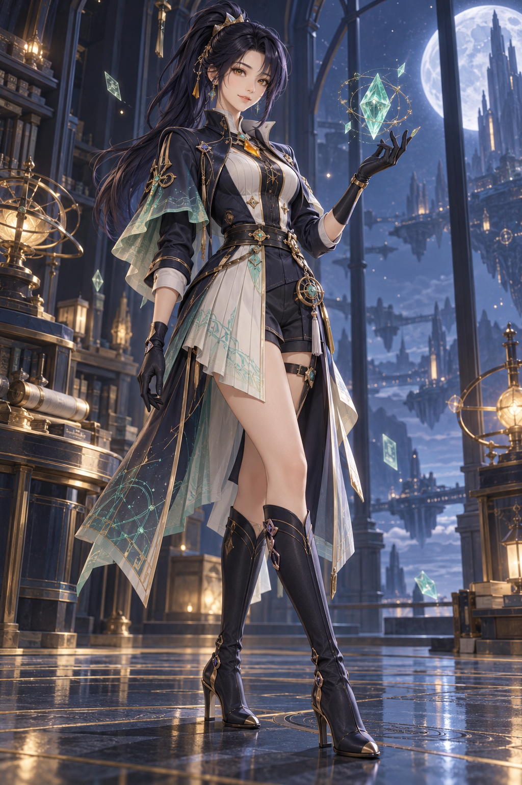

Aster Performance Lab
UE5 semantic performance vertical slice
Idle
web surrogate · UE assets pending PIE

Aster
Select a scene, then run a strategy.
Archivist / field researcher
calm · precise · interruptible